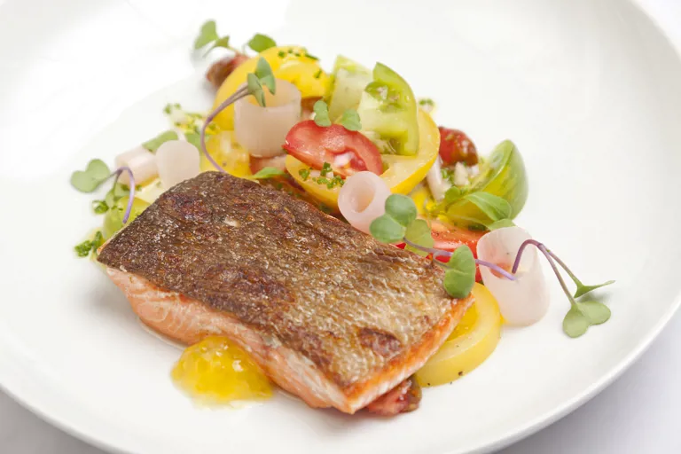

Lamb

Description
Dave Watts' colourful salmon with tomatoes recipe makes use of quality, seasonal ingredients to create a vibrant and intoxicating dish.
Using English heritage tomatoes instead of regular varieties will lend the dish a pleasing sweetness.
Ingredients
-
Salmon
- 500g of salmon fillet, trimmed weight
- 25ml of rapeseed oil
- 1/2 lemon
- 1g of salt
- 1 pinch of ground white pepper
-
Pickling liquor
- 15g of banana shallot
- 2g of garlic
- 100ml of water
- 40ml of white wine vinegar
- 15ml of rapeseed oil
- 10g of caster sugar
- 1 sprig of thyme
- 2g of salt
- black pepper, freshly ground
-
Shallot rings
- 2 banana shallots
- 500ml of water
- salt
-
English heritage tomatoes
- heritage tomatoes, mixed variety
- 20ml of rapeseed oil
- 2g of salt
- 1 garlic clove
- 2 basil leaves
- 5g of sugar
- black pepper, freshly ground
-
To serve
- chives, finely sliced
- micro herbs, pink-stem radish
Steps
- To prepare the pickling liquor for the shallots, peel and finely slice the shallot and garlic, place all of the ingredients into a small pan and bring to the boil.
- Once boiling, remove from the heat and allow to infuse for a minimum of 30 minutes, or, preferably, overnight. Strain through a sieve, reserving the liquor.
- 2-3 hours before serving, peel the banana shallots and slice into 1-2cm thick cylinders.
- Bring the water and salt to the boil in a pan, then blanch the shallots for 1-2 minutes, so they retain a little bite.
- Remove from the water and place straight into the pickling liquor until required
- To prepare the tomatoes, brush a reasonably large baking tray with half of the oil then sprinkle with half of the salt.
- Crush the clove of garlic and rub all over the tray, allowing the garlic to break down and flavour the oil and salt.
- Tear the basil leaves and rub into the tray.
- Slice the tomatoes into different shapes and place onto the seasoned tray, removing a few sections of the tomato seeds for presentation.
- Brush the tomatoes with the remaining oil and season with the salt, sugar and black pepper.
- Cover the tray with cling film and leave at room temperature for a minimum of 30 minutes before using.
- To prepare the salmon, divide the fillet into 4 equally-weighted portions and place skin-side down onto clean kitchen towel or J-cloth until ready to pan-fry.
- Place a large frying pan over a medium heat. Season the salmon fillets with salt and pepper and add the oil to the pan.
- Once the oil is hot, add the salmon skin-side down and cook to halfway through each fillet, then turn over and remove the pan from the heat.
- The residual heat of the pan should cook the fish through.
- Place the tomatoes onto plates, followed by the drained shallot cylinders.
- Squeeze a little lemon juice over the cooked fish and serve alongside the tomatoes.
- Add the chives to the pan and drizzle the pan juice and chives over the salmon and tomatoes.
- Garnish with the pink-stem micro herbs and tomato seeds before serving.